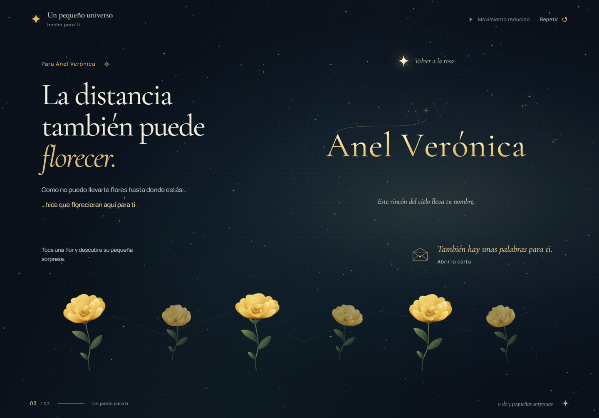

21 de septiembre de 2026 · Rama local v2 · Chrome mediante Playwright.
117 capturas de la matriz de estados y transiciones en nueve tamaños. La carta se captura dentro del viewport; el resto muestra la página completa.

Sin pruebas en teléfono físico o Safari/iOS. Los resultados completos y sus límites se documentan en VERIFICATION.md.